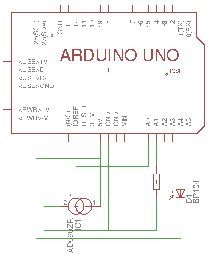

description Opdracht
Voor het vak Embedded Systems moeten wij aan de hand van een Arduino bordje zelf een uitgezochte opdracht uitwerken. Je kan elke update volgen met bijhorende foto's.
Als project ga ik een lichtsensor en een temperatuur sensor uitlezen.
De gegevens die ik uitlees ga ik op een webapp of android applicatie uitschrijven.
Het uitschrijven gebeurt aan de hand van grafieken. Ook moet het mogelijk zijn
om de huidige waarde te kunnen lezen in waarden. Aan de arduino zelf zal er een
lcd scherm aangesloten zijn waar je rechtstreeks de huidige waarden kan bekijken.
Met vriendelijke groeten,
Jeroen
Complete
In Progress
Not Done
update Updates
Deze week beginnen we aan het uitwerken van het schema voor het project. Eens dit af is kunnen we beginnen met het
bouwen van het systeem. Waarna we onze code kunnen beginnen schrijven.
code Code & Schema
#include < SPI.h >
#include < Ethernet2.h >
#define LDR A1
#define TEMP A0
byte mac[] = { 0xDE, 0xAD, 0xBE, 0xEF, 0xFE, 0xED };
char server[] = "www.google.com";
IPAddress ip(192, 168, 2, 102);
EthernetClient client;
void setup(){
Serial.begin(9600);
if (Ethernet.begin(mac) == 0) {
Serial.println("Failed to configure using DHCP");
Ethernet.begin(mac, ip); // try without DHCP:
}
delay(1000); // give shield time to initialize
if (client.connect(server, 80)) {
Serial.println("connected to server");
client.println("GET /search?q=arduino HTTP/1.1");
client.println("Host: www.google.com");
client.println("Connection: close");
client.println();
} else {
Serial.println("connection failed");
}
}
void loop(){
while (client.available()) {
char c = client.read();
Serial.print(c);
}
Serial.println("Network state: Running");
int value2 = analogRead(TEMP);
Serial.print("Temp: ");
Serial.println(value2);
float voltage = (value2/1024.0)*5.0;
Serial.print("Volt: ");
Serial.println(voltage);
float temperatuur = (voltage - 0.5)*100;
Serial.print("Temp in C: ");
Serial.println(temperatuur);
int value = analogRead(LDR);
Serial.print("LDR: ");
Serial.println(value);
delay(10000);
}
